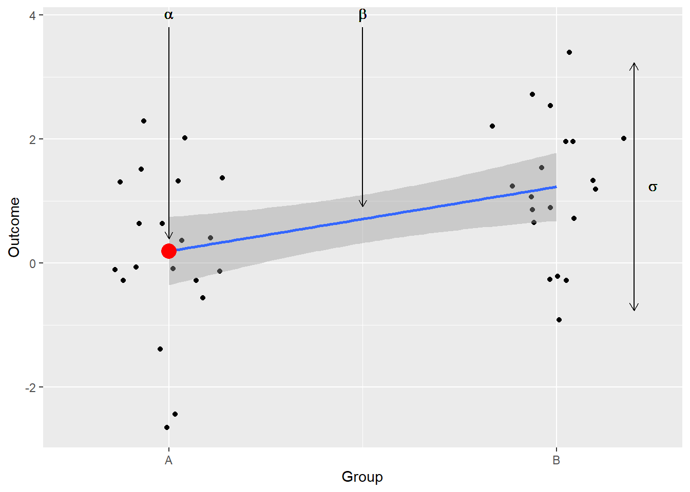

group_n <- 20
mean_a <- 0
mean_b <- 1.5
sigma <- 1
set.seed(42)
gA_df <- data.frame(G = "A",
O = rnorm(group_n, mean_a, sigma))
gB_df <- data.frame(G = "B",
O = rnorm(group_n, mean_b, sigma))
sim_df <-
bind_rows(gA_df, gB_df) |>
mutate(G = factor(G, levels = c("A", "B")),
G_B = as.integer(G == "B"))
ggplot(sim_df, aes(x = G, y = O)) +
geom_boxplot() +
geom_quasirandom(method = "tukeyDense") +
xlab("Group") +
ylab("Outcome")18 Deriving the formula for t-statistics
When I talked with my colleagues who teach first year students statistics, they pointed out that they want students to understand the formulas before using computer software. Therefore, the first step is working through the formulas, such as computing t-statistics, with pen and paper (plus a calculator). This is, of course, a good idea in principle. However, I have reservations about this approach. First, people tend to forget formulas that they don’t use frequently. Hence, virtually no student will remember the formula once they have passed the exam. However, this is admittedly a minor problem as you can always look the formula up. My second issue with teaching formulas is that this knowledge does not generalize. If you learned how to compute t-statistics to compare means of two normal distributions, you cannot easily adjust it extend to more distributions (e.g., what if you have three distributions and you forgot the formula for ANOVA?) or to different distributions (binomial, beta, Poisson, etc.) This means that when facing the data where linear models are no longer applicable, you are faced with the choice of abandoning the whole analysis, going non-parametric (with all the costs of not having an actual model), or massaging your data until it looks “normal enough”, so that formulas are applicable. Third, while formulas are very efficient way to answer the question, e.g., t-statistics tells you how different the two means are, it may be not obvious why they are the way the are. In other words, most students I’ve encountered have little intuition of how this formula came about and, therefore, have difficulty seeing common pattern across different statistical tests. Again, my colleagues argue that you must first learn about individual tests and then you can see the pattern and understand the general approach. Unfortunately, I see little evidence that this works. I feel that the opposite is true, so the material here is an attempt to show that if you understand the general principles of (linear) regression analysis, it is fairly easy to derive the formula for t-statistics yourself. However, I am fairly sceptical that it would work equally easily the other way around.
18.1 The problem: how different are means of two normal distributions?
Let us think about how we could analyse the question of wheter means of two normal distributions are different. This is a fairly frequent comparison, such comparing two Gs, two conditions in the experiment, etc. For the sake of simplicity, let us assume that distributions have the same variance and differ only in their means. Let us simulate the data first.
Next, let us construct the model by hand. We now that we want to compute the difference between means and that data is distribution normally around the mean. A typical model would use an indicator variable \(G_B\) which is equal to 0 for group “A” and 1 for group “B”1.
\[O_i \sim Normal(\mu_i, \sigma)\] \[\mu_i = \alpha + \beta G_B\] \[\alpha \sim Uniform(0, 5)\] \[\beta \sim Uniform(-5, 5)\] \[sigma \sim Exponential(0.1)\]
Here is a visual reminder what individual coefficient mean:

Fitting this model using rethinking library is very straightforward:
# fit the model
m1 <- quap(alist(
O ~ dnorm(mu, sigma),
mu <- a + b * G_B,
a ~ dunif(0, 5),
b ~ dunif(-5, 5),
sigma ~ dexp(0.1)),
data = sim_df)Now we can examine posterior distribution for \(\beta\) which encodes the difference between the two groups, computes it mean (an estimate of the difference), 97% compatibility interval (uncertainty about the estimate), and proportion of samples that are positive (probability that \(\mu_B > \mu_A\)):
# extract samples and examine the difference
m1_samples <- extract.samples(m1)
b_mean <- mean(m1_samples$b)
b_lower <- quantile(m1_samples$b, (1 - 0.97) / 2)
b_upper <- quantile(m1_samples$b, 1 - (1 - 0.97) / 2)
b_positive <- 100 * mean(m1_samples$b > 0)
ggplot(data = m1_samples, aes(x = b)) +
geom_histogram(bins = 100) +
geom_vline(xintercept = b_mean, color = "yellow") +
geom_vline(xintercept = b_lower, color = "blue") +
geom_vline(xintercept = b_upper, color = "blue") +
xlab("Beta") +
labs(subtitle = sprintf("Beta = %.2f [%.2f, %.2f]. P(Beta > 0) = %.1f%%", b_mean, b_lower, b_upper, b_positive))As you can see, our estimate is somewhat off (the “true” difference between “true” means is 1.5), but this is not surprising given the small sample size. The parameterization above is a classic way to formulate such model, but before we proceed to deriving the formula, let us re-parametrize it using indexing approach, as it will help us later.
\[O_i \sim Normal(\mu_i, \sigma)\] \[\mu_i = \alpha_{G[i]}\] \[\alpha_j \sim Uniform(0, 5)\] \[\sigma \sim Exponential(0.1)\]
Visual representation of changes in the model
# fit the model
m2 <- quap(alist(
O ~ dnorm(mu, sigma),
mu <- a[G],
a[G] ~ dunif(0, 5),
sigma ~ dexp(0.1)),
data = sim_df)
# extract samples and examine the difference
m2_samples <- extract.samples(m2)
m2_beta <- m2_samples$a[, 2] - m2_samples$a[, 1]
b_mean <- mean(m2_beta)
b_lower <- quantile(m2_beta, (1 - 0.97) / 2)
b_upper <- quantile(m2_beta, 1 - (1 - 0.97) / 2)
b_positive <- 100 * mean(m2_beta > 0)
ggplot(data = NULL, aes(x = m2_beta)) +
geom_histogram(bins = 100) +
geom_vline(xintercept = b_mean, color = "yellow") +
geom_vline(xintercept = b_lower, color = "blue") +
geom_vline(xintercept = b_upper, color = "blue") +
xlab("Beta") +
labs(subtitle = sprintf("Beta = %.2f [%.2f, %.2f]. P(Beta > 0) = %.1f%%", b_mean, b_lower, b_upper, b_positive))The estimates for mean, compatibility interval and probability that difference is positive are almost identical, as we did not change the model, just reparametrized it.
18.2 Deriving the formula
Now let’s try to figure out how we can skip the entire sampling by deriving an analytical formula. Why would we do that? Well, here, for didactic reasons, but in general if you need to compute a lot of specific comparisons then having an analytical formula is very handy. However fast the fitting process looks to you for this data, if you need to do it thousands or millions of times then every millisecond matters and having such formula will speed up the process dramatically.
Our goal is to compute a number (a.k.a., statistic) that expresses how large the difference between the two groups is. In other words, we want a number that tells us how easy it is to discriminate between the two groups based on their mean. This means that we are not really interested in the difference in the units of the outcome variable, but in some kind of number that turns absolute difference into that discriminability measure.
18.2.1 First piece: absolute difference between the two groups
Before we can start thinking about how to convert the absolute difference between the means into something more useful, we need to figure out the simplest way to compute it. Above, we fitted a model that estimated both means either directly (m2) or via the difference between them (m1). However, given that our data is normally distributed around the mean and we need one mean per group, we can just compute them directly and use them to compute the difference as well. Our sample means are \(\mu_A=0.19192\) and \(\mu_B=1.2290082\) and the difference between them is \(\mu_B - \mu_A = 1.0370882\). Compare them to model estimates \(\mu'_A=0.1939207\), \(\mu'_B=1.2268314\), and \(\mu'_B - \mu'_A = 1.0329107\). The difference is mostly due to sampling and is so small that we can simplify our life by using \(\mu_B - \mu_A\) without fitting the model. Thus, our initial formula is \[t = \frac{\mu_B - \mu_A}{?}?\]
I have added “?” to indicate that we need more pieces to complete the puzzle. Let us turn to the next piece.
18.2.2 Second piece: variability of difference stems from variability of data
Computing difference was easy, but a single number is not enough. We need to know how certain we can be about this value. In terms of Bayesian statistics, we want to know how broad is the posterior, i.e., just how much more plausible it is compared to difference of zero. In terms of frequentst statistics, we want to know how much this estimate will vary if we use a different sample from same two distributions and whether this value will come up more often than zero. One thing that we can notice is that our uncertainty about the difference between the means stems directly from our uncertainty about the means themselves. This means that for a given absolute difference, we expect it to vary less, if the variance of the distributions is small, and to vary more, if the variance of the distributions is large. Let us illustrate this using simulations.
Code
simulate_for_sigma <- function(df_sigma) {
bind_rows(data.frame(G = "A",
O = rnorm(group_n, mean_a, df_sigma)),
data.frame(G = "B",
O = rnorm(group_n, mean_b, df_sigma))) |>
mutate(G = factor(G, levels = c("A", "B")),
G_B = as.integer(G == "B"),
Sigma = df_sigma)
}
set.seed(42)
three_sigmas <- bind_rows(
simulate_for_sigma(0.1),
simulate_for_sigma(1),
simulate_for_sigma(3)
)
ggplot(three_sigmas, aes(x = as.integer(G), y = O)) +
geom_quasirandom(method = "tukeyDense", width = 0.2) +
geom_smooth(method = "lm", formula = y ~ x) +
scale_x_continuous(name = "Group", breaks = 1:2, labels = c("A", "B")) +
scale_y_continuous(name = "Outcome") +
facet_wrap(. ~ glue('sigma*" = {Sigma}"'), labeller = label_parsed)Recal that our aim is to compute a number (statistic) that tells us how discriminable two means are. Let us say that it should be larger when discrimination is easy (“difference” is large) and smaller when discrimination is hard2. As we saw above, for the same absolute difference, the larger the variance is, the harder it is to be certain about the difference, so discriminating between the two means is harder. In other words, for the given absolute difference, the larger our variance is the small the statistic should be. The easiest way to achive this is to simply divide (normalize) the absolute difference by the variance:
\[t = \frac{\mu_B - \mu_A}{\sigma}?\]
This means that distinguishing the means is ten times easier when \(\sigma=0.1\) compared to \(\sigma=1\) and thirty times easier compared to \(\sigma=3\).
18.2.3 Third piece: our certainty about means depend on the amount of data
In the section above, we have concluded that discriminability of two means is inversely proportional to the variance. However, we are not distinguishing between the two distributions, but between the two means. Our certainty about the means depends not only on the variance of the distribution, but also on the amount of the data. Note that getting more data will not change our uncertainty about individual data points, the variance of the distribution stays the same. However, more data helps to cancel out the noise and become more certain about distribution’s mean. To see what I mean, let us simulate the data, fit the model and look at the posterior distribution of the mean in each case.
Code
simulate_and_fit_difference <- function(data_n) {
crnt_df <-
bind_rows(data.frame(G = "A",
O = rnorm(data_n, mean_a, sigma)),
data.frame(G = "B",
O = rnorm(data_n, mean_b, sigma))) |>
mutate(G = factor(G, levels = c("A", "B")),
G_B = as.integer(G == "B"))
crnt_model <- quap(alist(
O ~ dnorm(mu, sigma),
mu <- a + b * G_B,
a ~ dunif(-5, 5),
b ~ dunif(-10, 10),
sigma ~ dexp(0.1)),
data = crnt_df)
crnt_samples <- extract.samples(crnt_model)
data.frame(N = data_n,
Alpha = crnt_samples$a)
}
set.seed(53)
n_df <- purrr::map(c(20, 100, 1000), ~simulate_and_fit_difference(.)) |> list_rbind()
n_labels <- as.character(glue("N = {sort(unique(n_df$N))}"))
names(n_labels) <- sort(unique(n_df$N))
ggplot(n_df, aes(x = Alpha)) +
geom_histogram(bins = 50) +
facet_wrap(. ~ N, labeller = labeller(N = n_labels)) +
xlab("Posterior distribution of mean for group A")As you can see, having more data clearly decreases the uncertainty. However, you can also notice that the decrease is not linear. Increasing the amount of data ten-fold from 10 to 100 samples has quite a big effect, but improvements are smaller for the same ten-fold increase from 100 to 1000 samples, and even smaller for the next ten-fold increase to 10,000 samples. This is clearly a case of diminishing returns, so let us simulate more intermediate cases to see what kind of dependence between number of samples and certainty can we assertain.
On the left, you can see average standard deviation of the posterior distribution of the mean and now it is easier to see that although more data decreases uncertainty, every single additional data point has a smaller effect. We can also inverse our representation by compute precision \(\kappa = 1 / \sigma\), which is then a measure of certainty: The higher is the value, the more precise and certain we are about the mean. Again, we see a curve which monotonically growths but with decreasing rate. A function that captures this shape is \(1/\sqrt{N}\) and it is the red line in the figure above. Why \(1/\sqrt{N}\)? Because variance of the distribution of mean is reduced linearly with more data points and variance is squared standard deviation, so if variance reduction is \(1/n\) then standard deviation is reduced by \(\sqrt{1/N} = 1/\sqrt{N}\). As precision is inverted standard deviation, it growths with the same \(\sqrt{N}\) speed.
We can place this new piece in two places. A traditional formula is to use it to normalize standard deviation turning the denominator of the formula into a standard error: \[t = \frac{\mu_B - \mu_A}{\sigma / \sqrt{N}}\] where \(\sigma / \sqrt{N}\) is the standard error of the mean. However, you can also group it differently, so that terms that are positively associated with discriminability are in the numerator and once that have a negative impact are in the denominator: \[t = \frac{(\mu_B - \mu_A)\sqrt{N}}{\sigma}\]
This way, it is (IMHO) easier to see that distinguishing between the two means is easier if 1) the absolute difference between them is larger (\((\mu_B - \mu_A)\uparrow\)), 2) there is more data (\(N\uparrow\)), and 3) variability of data is smaller (\(\sigma\downarrow\)).
18.3 Recap: why did we do it?
Our goal was to derive a formula to for a very specific case: Comparing means of two distributions with same variance. We started we are linear regression model and then examined how we can compute the information directly, without sampling the posterior. The results is the formula for t-statistic, which does indeed work for this specific case. As you can see in the figure below, the formula is definitely doing what we wanted it to do: there is a linear relationship between inverted 97% compatibility interval width (I inverted it, so that larger number means better, as in case of t-statistic) and the t-statistic that we computed for the same sample. The pattern of results also confirms to our expectations: large difference between the means (columns) and more data (rows) make it easier to distinguish between the means, whereas bigger variability of the data (color) makes it harder.
The explanation above, hopefully, solved couple of issues that I have mentioned in the beginning. If you followed the logic, you now know what individual pieces of the formula mean and why they come together in this particular way (issue #3). This also means that you can derive the formula yourself instead of trying to remember it. Or, at least, it should make remembering the formula easier (issue #1). However, the most important of them was issue #2: The fact that it is not easy to generalize to other cases when you only have the formula. Imagine that you want to ask the same question (what is the difference between two groups), but the data is binomial? It is not at all obvious, how you would modify it and the only option is to look for a different formula. In contrast, life is easy when you approach the same problem as a regression one. Recall our linear model:
\[O_i \sim Normal(\mu_i, \sigma)\] \[\mu_i = \alpha_{G[i]}\] \[\alpha_j \sim Uniform(0, 5)\] \[\sigma \sim Exponential(0.1)\]
And here is its the binomial data equivalent: \[O_i \sim Bernoulli(p_i)\] \[logit(p_i) = \alpha_{G[i]}\] \[\alpha_j \sim Uniform(-5, 5)\]
More importantly, once we have sampled the model, our analysis stays the same. We compute the difference between the two groups (preferably, in the probability space) \(\Delta_G = inv\_logit(\alpha_B) - inv\_logit(\alpha_A)\) and then plot this posterior distribution, compute compatibility interval(s), and proportion of probability mass that is positive (i.e., probability that the \(\alpha_B > \alpha_A\)). If you are afraid of link function, you can even compute the difference directly: \(\Delta_G = \alpha_B - \alpha_A\). This won’t change the probability that \(\alpha_B > \alpha_A\), but will make interpreting values of the posterior and of CI much harder.
And its get better! Your outcome variables are proportions? Just swap normal for beta distribution! \[O_i \sim Beta(\mu_i, \kappa)\] \[logit(\mu_i) = \alpha_{G[i]}\] \[\alpha_j \sim Uniform(0, 5)\] \[\kappa = 1 / \sigma\] \[\sigma \sim Exponential(0.1)\]
Want to compare event rate? Poisson could be an answer: \[O_i \sim Poisson(\lambda_i)\] \[log(lambda_i) = \alpha_{G[i]}\] \[\alpha_j \sim Uniform(-5, 5)\]
Yes, in all these cases you would need to know which distribution and link functions to use (the book tells you about the most widely used ones) and you will have to think about priors in each case. However, in each case you know how you can proceed and how you would characterize the results. Plus you can extend not only to different kind of data but to more groups, to more predictors, to random effects, etc. while working within the same framework.
Note that I am using flat and very weak priors to avoid regularization, so that the results would be close to a frequentist model with flat priors↩︎
It could be the other way around, of course, and we could have used small values to indicate “easy” and larger values to indicate “harder”. This kind of choices are intrinsically arbitrary, as you will see again below.↩︎